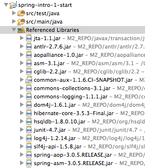
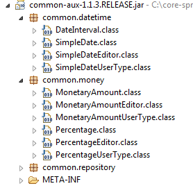
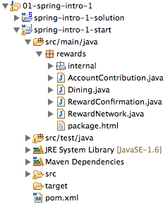
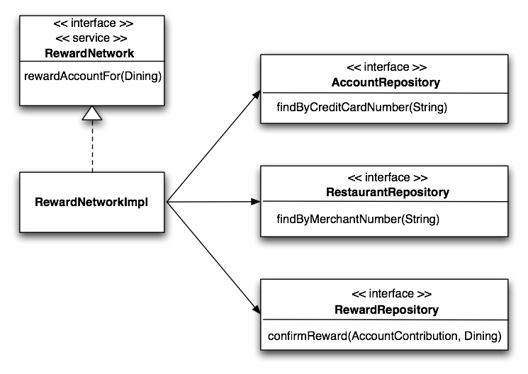
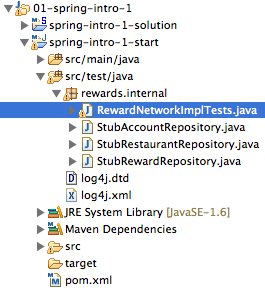

Welcome to Core Spring! In this lab you'll come to understand the basic workings of the Reward Network reference application and you'll be introduced to the tools you'll use throughout the course.
Once you will have familarized yourself with the tools and the application domain, you will implement and test the rewards application using Plain Old Java objects (POJOs).
At the end of the lab you will see that the application logic will be clean and not coupled with infrastructure APIs. You'll understand that you can develop and unit test your business logic without using Spring. Furthermore, what you develop in this lab will be directly runnable in a Spring environment without change.
Have fun with the steps below, and remember the goal is to get comfortable with the tools and application concepts. If you get stuck, don't hesitate to ask for help!
What you will learn:
Basic features of the SpringSource Tool Suite
Core RewardNetwork Domain and API
Basic interaction of the key components within the domain
Estimated time to complete: 30 minutes
Before beginning this lab, read about the course reference domain to gain background on the rewards application.
The SpringSource Tool Suite (STS) is a free IDE built on the Eclipse Platform. In this section, you will become familiar with the Tool Suite. You will also understand how the lab projects have been structured.
Launch the SpringSource Tool Suite by using the shortcut link on your desktop.
Figure 1: STS Desktop Icon
After double-clicking the shortcut, you will see the STS splash image appear.
Figure 2: STS Splash Image
You will be asked to select a workspace. You should accept the default location offered. You can optionally check the box labeled use this as the default and do not ask again.
![[Tip]](images/tip.png) | Tip |
|---|---|
| If you've just opened STS, it may be still starting up. Wait several moments until the progress indicator on the bottom right finishes. When complete, you should have no red error markers within the Package Explorer or Problems views |
Now that STS is up and running, you'll notice that, within the Package Explorer view on the left, projects are organized by Working Sets. Working Sets are essentially folders that contain a group of Eclipse projects. These working sets represent the various labs you will work through during this course. Notice that they all begin with a number so that the labs are organized in order as they occur in this lab guide.
If it is not already open, expand the 01-spring-intro-1 Working Set. Within you'll find two projects: spring-intro-1-start and spring-intro-1-solution. This pair of -start and -stolution projects is a common pattern throughout the labs in this course.
Open the spring-intro-1-start project and expand its Referenced Libraries node. Here you'll see a number of dependencies similar to the screenshot below:
|  |
Figure 3: Referenced Libraries
| Tip |
|---|---|
This screenshot uses the "Hierarchical" Package Presentation view instead of the "Flat" view (the default). See the Eclipse tips section on how to toggle between the two views. |
For the most part, these dependencies are straightforward and probably similar to what you're used to in your own projects. For example, there are several dependencies on Spring Framework jars, on Hibernate, DOM4J, etc.
Notice near the top there is a jar named common-aux.
|  |
Figure 4: CommonAux components
This dependency is specific to Spring training courseware, and contains a number of types such as MonetaryAmount, SimpleDate, etc. You'll make use of these types throughout the course. Take a moment now to explore the contents of that jar and notice that if you double-click on the classes, the sources are available for you to browse.
Before you begin to use Spring to configure an application, the pieces of the application must be understood. If you haven't already done so, take a moment to review Reward Dining: The Course Reference Domain in the preface to this lab guide. This overview will guide you through understanding the background of the Reward Network application domain and thus provide context for the rest of the course.
The rewards application consists of several pieces that work
together to reward accounts for dining at restaurants. In this lab, most
of these pieces have been implemented for you. However, the central
piece, the RewardNetwork, has not.
The RewardNetwork is responsible for carrying out
rewardAccountFor(Dining) operations. In this
step you'll be working in a class that implements this interface. See
the implementation class below:
 |
Figure 5: RewardNetworkImpl
implements the RewardNetwork
interface
Take a look at your spring-intro-1-start
project in STS. Navigate into the
src/main/java source folder and you'll see the
root rewards package. Within that package you'll
find the RewardNetwork Java interface
definition:
|  |
Figure 6: The rewards package
The classes inside the root rewards package
fully define the public interface for the application, with
RewardNetwork being the central
element. Open RewardNetwork.java and
review it.
Now expand the rewards.internal package and
open the implementation class
RewardNetworkImpl.java.
RewardNetworkImpl
should rely on three supporting data access services called 'Repositories'
to do its job. These include:
An AccountRepository to
load Account objects to make benefit
contributions to.
A RestaurantRepository to
load Restaurant objects to calculate how
much benefit to reward an account for dining.
A RewardRepository to track
confirmed reward transactions for accounting and reporting
purposes.
This relationship is shown graphically below:
|  |
Figure 7: RewardNetworkImpl class diagram
Locate the single constructor and notice all three dependencies
are injected when the RewardNetworkImpl is
constructed.
In this step you'll implement the application logic necessary to
complete a rewardAccountFor(Dining)
operation, delegating to your dependents as you go.
Start by reviewing your existing RewardNetworkImpl
rewardAccountFor(Dining) implementation. As you will see, it doesn't do much at the moment.
Now code the following steps to complete the method implementation:
 |
Figure 08: The RewardNetworkImpl rewardAccountFor(Dining) sequence
| Tip |
|---|---|
Use Eclipse's autocomplete to help you as you define each method call and variable assignment. |
| Tip |
|---|---|
You get the credit card and merchant numbers from the
|
How do you know the application logic you just wrote actually works? You don't, not without a test that proves it. In this step you'll review and run an automated JUnit test to verify what you just coded is correct.
Navigate into the src/test/java source
folder and you'll see the root rewards package.
All tests for the rewards application reside within this tree at the
same level as the source they exercise. Drill down into the
rewards.internal package and you'll see
RewardNetworkImplTests, the JUnit test for your
RewardNetworkImpl class.
|  |
Figure 09: The rewards test tree
Inside RewardNetworkImplTests you can notice that the setUp() method, 'stub' repositories
have been created and injected into the
RewardNetworkImpl class using the
constructor.
Review the only test method in the class. It calls
rewardNetwork.rewardAccountFor(Dining) and then makes assert statements to evaluate the result of calling this method. In this way the unit test is able to construct an
instance of RewardNetworkImpl using the mock objects as dependencies
and verify that the logic you implemented functions as
expected.
Once you reviewed the test logic, run the test. To run,
right-click on RewardNetworkImplTests and
select Run As -> JUnit Test.
When you have the green bar, congratulations! You've completed this lab. You have just developed and unit tested a component of a realistic Java application, exercising application behavior successfully in a test environment inside your IDE. You used stubs to test your application logic in isolation, without involving external dependencies such as a database or Spring. And your application logic is clean and decoupled from infrastructure APIs.
In the next lab, you'll use Spring to configure this same application from all the real parts, including plugging in real repository implementations that access a relational database.